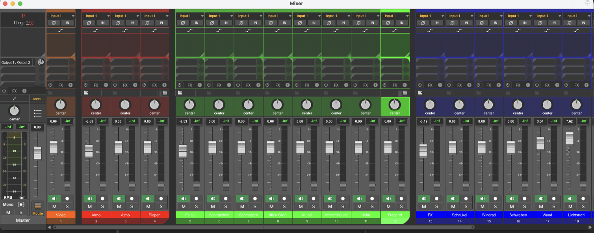

← Zurück zur Übersicht
Lifted
Ein stummer Kurzfilm – neu vertont. Atmosphären, Soundeffekte und selbst aufgenommene Geräusche zu einer glaubwürdigen Klangwelt zusammengefügt.
Ein stummer Kurzfilm – neu vertont. Atmosphären, Soundeffekte und selbst aufgenommene Geräusche zu einer glaubwürdigen Klangwelt zusammengefügt.
LIFTED ist ein Kurzfilm, den ich im Rahmen des Kurses Sounddesign an der Hochschule Furtwangen auf meine eigene Weise vertont habe. Ausgangspunkt war ein stummer Film – das Ziel: eine überzeugende Klangwelt von Grund auf aufbauen.
Dabei habe ich mit einer Mischung aus selbst aufgenommenen Sounds, YouTube-Quellen und MotivMix gearbeitet. Besonders spannend war der kreative Ansatz: Ein Alltagsgegenstand wie eine Metallschüssel wird zum Helm eines Aliens – was zählt ist nicht die Herkunft des Sounds, sondern ob er im Kontext funktioniert.
Kurzfilm „LIFTED" © Pixar Animation Studios · Sounddesign: Tim Heilemann
